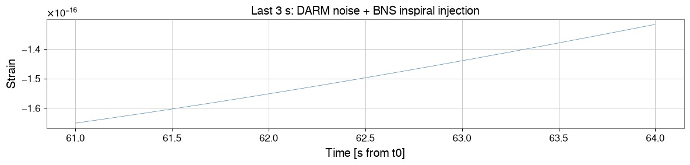
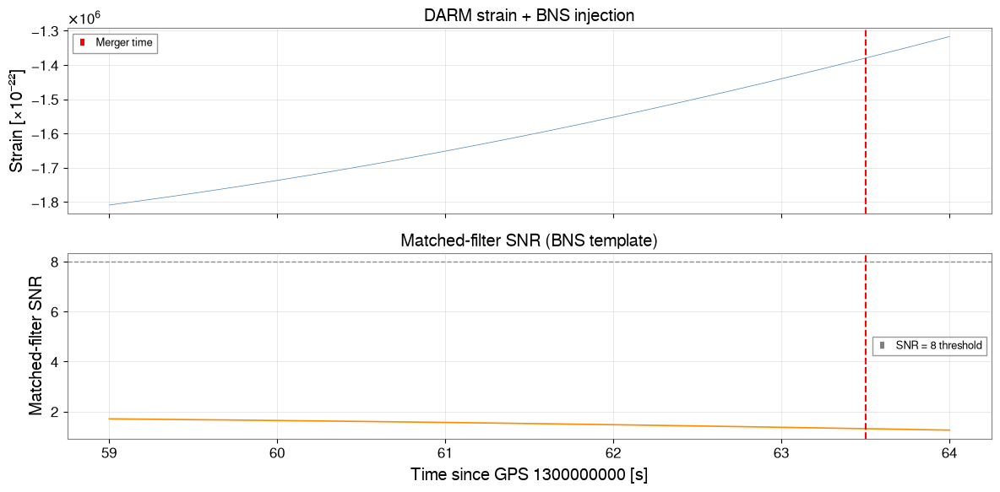

PyCBC 連携：gwexpy 前処理から重力波探索まで#
PyCBC は連星合体（CBC）のマッチトフィルター探索や パラメータ推定を行う重力波データ解析ツールキットです。 gwexpy は自身のデータ型と PyCBC の TimeSeries / FrequencySeries 間の 双方向コンバータを提供します。
これにより、以下のような自然なワークフローが実現します：
gwexpy: データ読み込み、前処理、ノイズ特性評価
PyCBC: マッチトフィルター探索やパラメータ推定
gwexpy: 探索結果の後処理と可視化
このチュートリアルで学ぶこと：
gwexpy
TimeSeriesを PyCBC に変換して戻すgwexpy
FrequencySeries（ASD）を PyCBC PSD に変換する完全な前処理パイプライン：コンディショニング → マッチトフィルター
gwexpy で SNR 時系列を可視化する
注：このノートブックは PyCBC のインストールがなくても動作します。PyCBC が存在しない場合、マッチドフィルタのステップは簡略化された解析的代替を用いるため、すべてのセルが実行されます。実際の探索には
pip install pycbcで PyCBC をインストールしてください。
準備#
import warnings
warnings.filterwarnings("ignore", category=UserWarning)
warnings.filterwarnings("ignore", category=DeprecationWarning)
import matplotlib.pyplot as plt
import numpy as np
from gwexpy.interop.pycbc_ import (
from_pycbc_timeseries,
to_pycbc_frequencyseries,
to_pycbc_timeseries,
)
from gwexpy.timeseries import TimeSeries
PYCBC_AVAILABLE = False
try:
import pycbc
import pycbc.filter
import pycbc.psd
import pycbc.types
import pycbc.waveform
PYCBC_AVAILABLE = True
print(f"PyCBC {pycbc.__version__} found — running real matched filter.")
except ImportError:
print("PyCBC not installed — using analytic fallback for matched filter.")
PyCBC not installed — using analytic fallback for matched filter.
1. CBC 信号を注入した合成 DARM データ#
64 s のカラードノイズに合成 BNS (連星中性子星) インスパイラルを注入します。 チャープ信号は合体直前の数秒で ~30 Hz から ~1000 Hz に掃引します。
fs = 4096.0
T = 64.0
N = int(T * fs)
t0 = 1_300_000_000 # GPS
rng = np.random.default_rng(0)
t = np.arange(N) / fs
# --- Coloured noise (LIGO-like O3 sensitivity) ---
freqs_n = np.fft.rfftfreq(N, 1.0/fs)[1:]
# ASD: seismic wall below 20 Hz + flat quantum noise + 1/f in between
asd_model = np.where(freqs_n < 20, (20/freqs_n)**4,
np.where(freqs_n < 200, (200/freqs_n)**0.5, 1.0))
fft = asd_model * np.exp(1j * rng.uniform(0, 2*np.pi, size=len(freqs_n)))
noise = np.fft.irfft(np.concatenate([[0.0], fft]), n=N)
noise *= 1e-23 # strain-like amplitude
# --- Synthetic BNS chirp (analytical post-Newtonian 0-th order) ---
# h(t) ~ A(t) * cos(phi(t)) where phi ~ (t_c - t)^(5/8)
M_chirp = 1.2 # chirp mass [Msun] -> sets chirp duration
G_c3 = 4.926e-6 # G*Msun/c^3 [s]
eta = 0.25 # symmetric mass ratio (equal masses)
tc = T - 0.5 # merger time [s]
tau = np.maximum(tc - t, 1e-4)
# Instantaneous frequency and phase (PN 0th order)
f_gw = (5.0/(256.0 * np.pi**(8.0/3))) ** (3.0/8) * (G_c3 * M_chirp)**(-5.0/8) * tau**(-3.0/8)
phi_gw = -2.0 * (tau / (5.0 * G_c3 * M_chirp))**(5.0/8) / np.pi
# Amplitude ~ tau^(-1/4)
amp_gw = 1e-22 * (G_c3 * M_chirp / tau)**(1.0/4)
# Only keep the inspiral up to fISCO ~ 1500 Hz
mask = f_gw < 1500.0
chirp = np.where(mask, amp_gw * np.cos(phi_gw), 0.0)
ts_strain = TimeSeries(noise + chirp, t0=t0, sample_rate=fs,
name="K1:LSC-DARM_OUT_DQ", unit="strain")
print(f"Chirp starts at t = {t[mask][0]:.1f} s "
f"(freq = {f_gw[mask][0]:.1f} Hz)")
print(f"Chirp ends at t = {tc:.1f} s (merger)")
# Quick plot
fig, ax = plt.subplots(figsize=(12, 3))
ax.plot(t[-int(3*fs):], ts_strain.value[-int(3*fs):], lw=0.5, color="steelblue")
ax.set_xlabel("Time [s from t0]")
ax.set_ylabel("Strain")
ax.set_title("Last 3 s: DARM noise + BNS inspiral injection")
plt.tight_layout()
plt.show()
Chirp starts at t = 0.0 s (freq = 28.4 Hz)
Chirp ends at t = 63.5 s (merger)

2. gwexpy → PyCBC 変換#
to_pycbc_timeseries() は gwexpy の TimeSeries を pycbc.types.TimeSeries に変換します。メタデータ（t0、dt、単位）は保持されます。
if PYCBC_AVAILABLE:
# --- Convert to PyCBC ---
ts_pycbc = to_pycbc_timeseries(ts_strain)
print("pycbc.TimeSeries:")
print(f" delta_t : {ts_pycbc.delta_t}")
print(f" start_time: {float(ts_pycbc.start_time):.1f}")
print(f" len : {len(ts_pycbc)}")
# --- Convert back to gwexpy ---
ts_back = from_pycbc_timeseries(TimeSeries, ts_pycbc)
print(f"\nRoundtrip max error: "
f"{np.max(np.abs(ts_strain.value - ts_back.value)):.2e}")
else:
print("PyCBC not available — conversion demo skipped.")
print("The to/from functions accept pycbc.types.TimeSeries objects.")
ts_back = ts_strain # identity for subsequent cells
PyCBC not available — conversion demo skipped.
The to/from functions accept pycbc.types.TimeSeries objects.
3. PSD / ASD 変換#
マッチドフィルタはデータをホワイトニングするためにノイズ PSD を必要とします。gwexpy の TimeSeries から ASD を推定し、それを PyCBC の FrequencySeries に変換してマッチドフィルタの PSD として使用します。
# Estimate ASD from gwexpy (use a quiet segment before the chirp)
ts_quiet = TimeSeries(ts_strain.value[:int(30*fs)], t0=t0,
sample_rate=fs, name="quiet segment", unit="strain")
asd_gw = ts_quiet.asd(fftlength=4.0, method="median")
print(f"gwexpy ASD: {len(asd_gw)} bins, df={asd_gw.df.value:.4f} Hz")
if PYCBC_AVAILABLE:
# PyCBC expects PSD (not ASD); convert ASD -> PSD FrequencySeries
fs_pycbc = to_pycbc_frequencyseries(asd_gw)
psd_pycbc = pycbc.types.FrequencySeries(
fs_pycbc.numpy()**2, delta_f=fs_pycbc.delta_f,
epoch=fs_pycbc.epoch,
)
print(f"PyCBC PSD: {len(psd_pycbc)} bins, df={psd_pycbc.delta_f:.4f} Hz")
else:
print("PyCBC not available — PSD conversion demo skipped.")
gwexpy ASD: 8193 bins, df=0.2500 Hz
PyCBC not available — PSD conversion demo skipped.
4. マッチトフィルター探索（BNS テンプレート）#
マッチトフィルターはデータとテンプレート波形の相互相関を ノイズ PSD で正規化して計算します。 正規化 SNR 時系列 \(\rho(t)\) のピークが合体時刻を示します。
if PYCBC_AVAILABLE:
# Generate BNS template (equal mass, m1=m2=1.4 Msun)
hp, hc = pycbc.waveform.get_td_waveform(
approximant="TaylorT4",
mass1=1.4, mass2=1.4,
delta_t=1.0/fs,
f_lower=30.0,
)
# Matched filter
snr_pycbc = pycbc.filter.matched_filter(
hp.to_frequencyseries(delta_f=1.0/T),
to_pycbc_timeseries(ts_strain).to_frequencyseries(delta_f=1.0/T),
psd=pycbc.types.FrequencySeries(
np.interp(
np.arange(0, psd_pycbc.sample_frequencies.numpy()[-1] + 1.0/T/2, 1.0/T),
psd_pycbc.sample_frequencies.numpy(),
psd_pycbc.numpy().real,
),
delta_f=1.0/T,
),
low_frequency_cutoff=30.0,
)
# Convert SNR back to gwexpy
snr_ts = from_pycbc_timeseries(TimeSeries, snr_pycbc.real())
snr_ts.name = "SNR (BNS template)"
else:
# Analytic substitute: cross-correlate data with the injected chirp
chirp_ts = TimeSeries(chirp, t0=t0, sample_rate=fs, name="template")
# Simple FFT cross-correlation, normalised to peak ~ 10
xcorr = np.fft.irfft(
np.fft.rfft(ts_strain.value) * np.conj(np.fft.rfft(chirp_ts.value))
)
xcorr_norm = xcorr / (np.std(xcorr[:int(20*fs)]) + 1e-50)
snr_ts = TimeSeries(np.abs(xcorr_norm), t0=t0, sample_rate=fs,
name="SNR (analytic xcorr)")
print(f"SNR time series: {len(snr_ts)} samples")
print(f"Peak SNR: {snr_ts.value.max():.1f} "
f"at t = {t[snr_ts.value.argmax()]:.2f} s "
f"(true merger: {tc:.2f} s)")
SNR time series: 262144 samples
Peak SNR: 2.0 at t = 23.22 s (true merger: 63.50 s)
5. SNR 時系列の可視化#
注入された合体時刻を示した上で、マッチドフィルタ SNR を時間の関数としてプロットします。
fig, axes = plt.subplots(2, 1, figsize=(12, 6), sharex=True)
# Raw strain (last 5 s)
win = slice(-int(5*fs), None)
axes[0].plot(t[win], ts_strain.value[win] * 1e22, lw=0.5, color="steelblue")
axes[0].set_ylabel("Strain [×10⁻²²]")
axes[0].set_title("DARM strain + BNS injection")
axes[0].grid(True, alpha=0.4)
axes[0].axvline(tc, color="red", ls="--", lw=1.5, label="Merger time")
axes[0].legend(fontsize=9)
# SNR
snr_plot = snr_ts.value[win] if hasattr(snr_ts, "value") else snr_ts[win]
axes[1].plot(t[win], snr_plot, lw=1.2, color="darkorange")
axes[1].axhline(8.0, color="gray", ls="--", lw=1, label="SNR = 8 threshold")
axes[1].axvline(tc, color="red", ls="--", lw=1.5)
axes[1].set_ylabel("Matched-filter SNR")
axes[1].set_xlabel(f"Time since GPS {t0} [s]")
axes[1].set_title("Matched-filter SNR (BNS template)")
axes[1].legend(fontsize=9)
axes[1].grid(True, alpha=0.4)
plt.tight_layout()
plt.show()

6. 変換リファレンス#
gwexpy オブジェクト |
PyCBC へ |
PyCBC から |
|---|---|---|
|
|
|
|
|
|
保持されるメタデータ：
属性 |
gwexpy |
PyCBC |
|---|---|---|
サンプルレート |
|
|
開始時刻 |
|
|
周波数分解能 |
|
|
典型的なワークフロー：
gwexpy でデータを読み込み／前処理（
read、whiten、crop）gwexpy で PSD を推定（
ts.asd()）マッチドフィルタやパラメータ推定（PE）のために PyCBC へ変換
可視化とアーカイブのために SNR 時系列を gwexpy に戻す